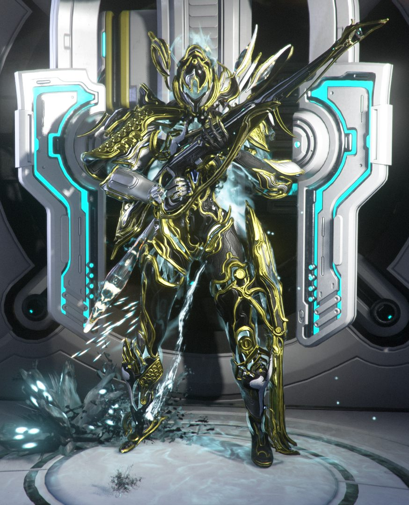
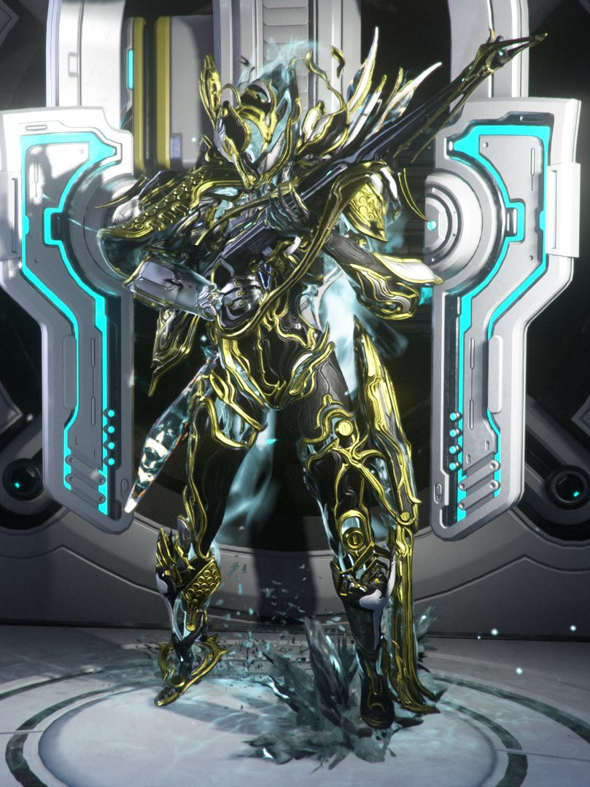
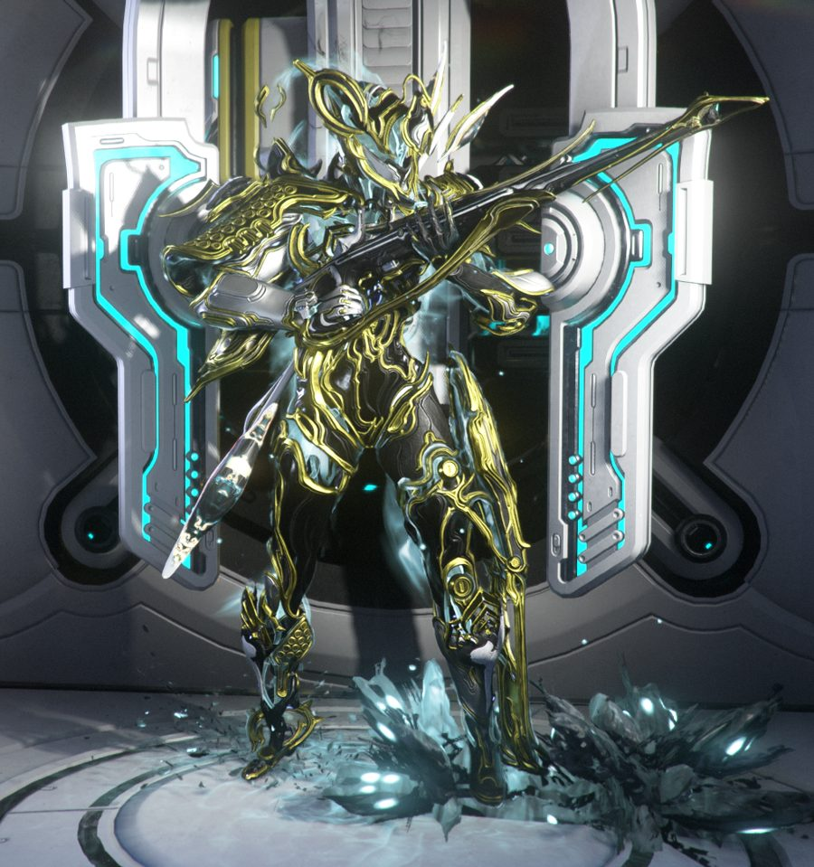

Resumo em 30 segundos
Onde clicar — passo a passo
Clique em cada passo para marcar como feito (fica salvo neste navegador).
Nave → Navegação → Eris
Node novo no canto inferior esquerdo de Eris → Relay especial. Fale com a interface na frente da nave. Isso abre a loja e libera as mensagens diárias do evento.
Aparecem em Eris a cada ~30–60 min e duram até ~90 min, então podem acumular até 3. Prefira o Steel Path (75) se você mata rápido.
Dark Sector com spawn alto de Infestados. Squad público rende mais, porque o pickup é compartilhado.
Siga a ordem de prioridade da loja. Marque o que já comprou.

Rotina por sessão
Escolha quanto tempo você tem hoje.
Missões em Eris
Ranking por objetivo. Filtre pelo que você quer ganhar junto com a Moonflesh.
| Node | Tipo | Moonflesh | Bônus | Quando usar |
|---|
As taxas de relíquia vêm do vídeo que você mandou e não foram conferidas no wiki.
Loja da Praghasa
Clique para marcar o que já tem ou comprou. Os totais e a calculadora se atualizam sozinhos.
Repetíveis (só com a sobra)
| Item | Custo | Limite | Custo máximo | Vale? |
|---|---|---|---|---|
| 2.000 Kuva | 20 | 25× | 500 | Bom 50.000 Kuva no total |
| 100 Endo | 1 | 300× | 300 | Bom 30.000 Endo |
| 10.000 Créditos | 3 | 100× | 300 | Ok 1 milhão de créditos |
Arcanos
Cada arcano chega ao rank máximo (R5) com 21 cópias. O limite é 42 por tipo (dois sets). Marque só os que você vai usar; maximizar todos custa cerca de 1.700.
Calculadora de tempo
Usa o que você não marcou na loja e os arcanos selecionados.
Seu loadout: Xaku Prime · Orthos Prime · Companheiro
Xaku Prime no Taubound
Sua build: Força 279% · Alcance 250% · Duração 128% · Eficiência 45% · 715 de energia · Molt Augmented + Arcane Blessing.
- Grasp of Lohk funciona contra Infestados. Se o inimigo não tem arma, o Xaku ganha uma réplica de Void da sua primária que orbita e atira sozinha. Ou seja, as "torres" funcionam aqui.
- Exceção: Overguard. Eximus com Overguard não geram réplica. Os Alerts vêm cheios de Eximus, então nesses você vai precisar atirar ou usar melee.
- Infestados vêm até você, o que combina com o seu estilo de não mirar: fique em corredores e deixe as armas trabalharem.
- O gargalo vai ser buscar os drops, não matar. Em squad o pickup é compartilhado. Se jogar solo, use Enemy Radar ou mods de velocidade.
- Shards: você tem 3 Crimson, 1 Amber e 1 Violet. O evento vende Tauforged Crimson e Amber: se algum dos seus for comum, a versão Tauforged é um upgrade direto no mesmo encaixe (as Tauforged têm bônus maior que as comuns). A Azure você pode guardar para outro frame.
- Eficiência 45% com Blind Rage: nos Alerts de Steel Path, de onda em onda, fique de olho na energia.
Orthos Prime + Melee Influence
- O seu Orthos usa Melee Influence, que está à venda na Praghasa por 8 cada.
- Na sua tela ele aparece no rank 2 (6 cópias). Para chegar ao R5 faltam 15 cópias = 120 Moonflesh. É o arcano mais barato de completar para você; já deixei marcado na seção de Arcanos.
Helios ou Huras Kubrow?
- Hoje você está com o Huras Kubrow. Nenhum companheiro muda a Moonflesh, então trocar pelo Helios para escanear não custa nada de rendimento.
- Decisão: fique com o Huras. O evento não traz nada novo para escanear (só Infestados de Eris, que você já completou no Codex). Além disso, a sua build depende da invisibilidade do Stalk para chegar perto e espalhar as explosões virais.
- Deixe um Codex Scanner no gear wheel: o Helios usa os seus scanners.
- Expectativa realista: os Infestados de Eris completam o Codex rápido. Depois disso o Helios fica ocioso, mas ainda vale para objetos e flora do mapa.



Armadilhas comuns
Usar booster
Booster de recurso não afeta a Moonflesh. Guarde para outro farm.
Esquecer o Contegorus
Liberar não é ganhar. Volte e compre cada peça depois de cada marco.
Guardar Moonflesh
Não há troca anunciada depois de 17/11. Gaste tudo, nem que seja em Endo e Kuva.
Archon Shards: 2 ou 3?
O vídeo fala em dois; a lista da loja publicada mostra três (Crimson, Azure e Amber). Confira na Praghasa.
"4.500 compra tudo"
Pela tabela de preços, os itens únicos somam cerca de 5.750, fora os arcanos. Use a calculadora.
Maggots
Os maggots pequenos não dropam Moonflesh. Não perca tempo com eles.
Outros eventos ativos
Baro Ki'Teer
Visita 2: 23–25/10. Próximas: 30/10–01/11 e 06–08/11.
Nights of Naberus
Tactical Alert do Jack O'Naut: Jack O'Naut Keychain Sugatra, Glyph, Noggle e 50.000 créditos.
Market: 1 crédito
Aba Community Event do Market: Conquera Syandana e outros cosméticos por 1 crédito.
Galeria
Clique para ampliar. As imagens carregam da internet; se alguma sumir, é porque o site de origem bloqueou.


Imagens © Digital Extremes, exibidas a partir de Item Level Gaming, Final Weapon e AllThingsHow.